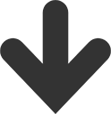

化粧品といいますとメイクアップ用品というイメージがありますが、シャンプー・ボディーソープなど赤ちゃんから大人まで家族みんなが使う日用品も含まれます。
一般的には石油由来の化学物質で作られていることが多いのですが、シナリーでは体と環境に配慮した100％脱石油の製品を製造、販売しております。
基礎化粧品やお子様にも使えるスキンケア製品、肌に負担をかけないメイクアップ用品、シャンプーから染毛剤のヘアケア製品、歯磨きなどの日用品、全ての精油に証明書が付いているアロマ製品を販売しています。
・夜のお手入れ方法


・ベースメイク作り


24時間脱石油ライフ
美しい美肌へ！
シナリーの化粧品は全てがスキンケアの効果があります。なので、シナリーの化粧品を24時間活用することでより美しく綺麗になります！